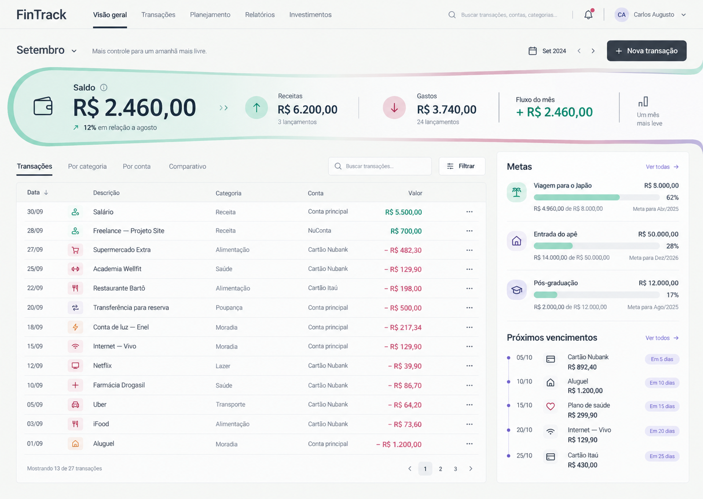
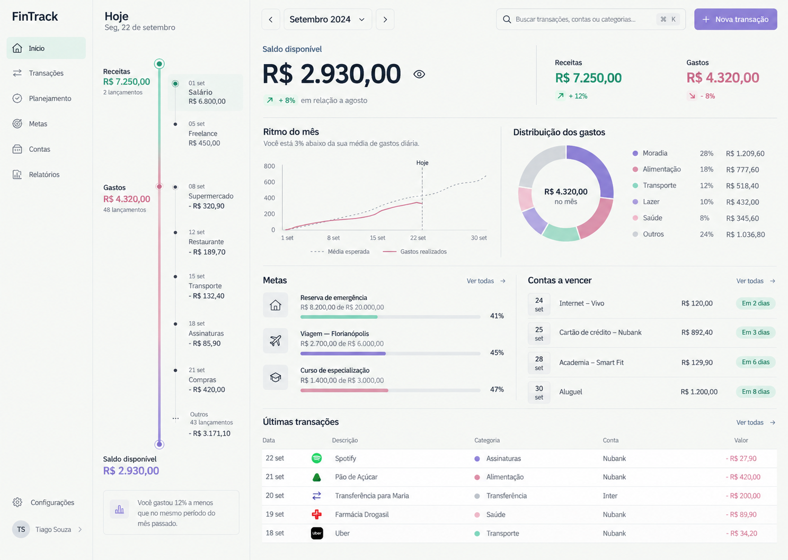

A · Painel contínuo
Navegação lateral, leitura ampla de evolução e coluna dedicada a metas e vencimentos.

Escolha a composição exata. A identidade visual permanece a mesma nas três opções.
Navegação lateral, leitura ampla de evolução e coluna dedicada a metas e vencimentos.
Navegação superior, saldo incorporado à faixa de fluxo e ledger como principal área de trabalho.

O mês percorre uma linha vertical expressiva, com análises e compromissos organizados ao lado.
